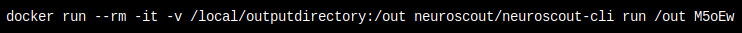

Finalize and Run
After you've sufficiently reviewed your analysis, you need to generate an executable analysis bundle prior to being able to execute it.

In the upper right you'll find a toggle that let's you switch from a public analysis (the default), to private.
Public analyses are listed under "public analyses", and are searchable by other Neuroscout users.
Private analyses do not show up in this listing, but be aware that any user with the analyses' unique ID can view this analysis.
You can use this to your advantage to share your analysis with your colleagues.
If you agree to the terms, click Generate to submit.
Be patient, analysis bundle generation may take a while.
If you're in a rush, and are willing to risk additional run-time errors, uncheck Validate design matrix.
Status
After submitting your analysis, it will no longer be editable unless there is an error in your design that you must fix.
If your analysis successfully compiles, an example neuroscout-cli command will be shown.

For more information on how to execute an analysis, head over to the neuroscout-cli documentation.
Note
After your analysis is compiled, you can change the public/private settings of your analysis, as well as edit the name and description.
Also, notice the Review tab is still available.